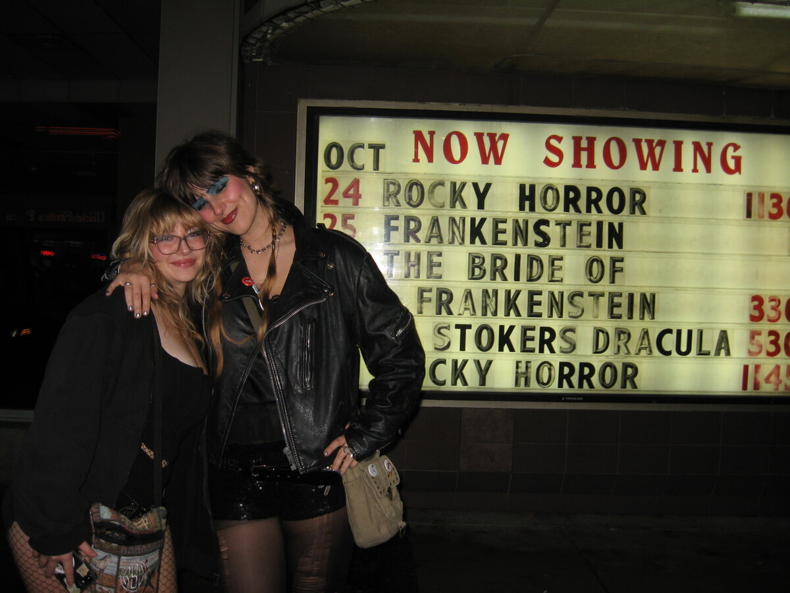

tuesday, november 4th
5:10pm
i keep glancing out the window as i cook dinner, thinking that surely it must be 7pm, but nope.
not even technically dinner time yet. fuck november!!! i hate u bring the sun back.
here is a typical morning for ani:
-wake up and stare at nothing for like 2 minutes to fully wake up
-put on my big shirt to go pee
-put on sunscreen and deodorant
-make mint tea
-go back up stairs with my tea and sip it as i do my makeup, get dressed, and accessorize
-go downstairs and make some sort of breakfast (today it was more like lunch, so i had a
grilled cheese with tomato soup, some cucumber, and an orange)
-put the dishes away and brush my teeth
-head back upstairs to pack my bag and put on a jacket
-come downstairs to put my shoes on and head out the door
-get my bike from the shed
-bike to da bus stop and catch a ride to class
writing this made me realize how many times i walk up and down the stairs. damn.
i just finished making dinner. i think i’m gonna eat, and then head to the library to study? i
really don’t want to venture out into the cold and darkness, but i’ve been super unproductive at
home lately.
friday, october 31st
11:20am
HAPPY HALLOWEENNNNIE!!!


in honour of today i wanna talk about my favourite things ever that i think about at least a few
times a year: ispy spooky mansion.
does anyone know what i’m talking about? i used to play this game religiously with my friend in her
basement on the wii. so many fun memories playing this. we were probably like 7-8 years old when we
were playing it the most.
this game honestly felt like a fever dream, but one day i decided to look it up and i found it. apparently
it was released in 2010, and its just a game that involves looking for things and solving puzzles, with
the best host ever, skelly!!!
i would be her for halloween, but everyone would just think that i was just regular, boring skeleton.. smh.
anyways, here is a little video of some game play, check
it out if you want some spooky 2010s nostalgia.
wednesday, october 29th
5:19pm
omg halloween is so so so so closeeee! which is so awesome and fun but that also means that
october is almost over, and it makes me remember that it won’t be another year until i can live
in october again, you know?
i’m kinda lucky this year, considering i can fully appreciate halloweekend without worrying about how
i should be studying, since my next midterm isn’t until november 14th. bro it’s for math tho, and math
is getting serioussss ugh.
today my prof was explaining integrals, and i kept thinking about how it was like watching someone
explain a conspiracy theory. like yes this stuff is all true, but it’s crazy how someone figured this
all out. imagine being so big brained you invent integrals??? brah.
anyways, i’m working on related rates which is HARD, so i’m gonna lock in today and tomorrow, but the
rest of the weekend is kind of a write off.
i’m excited to see tor play in they banddd w zach and others. #first show ever. gonna be crazy town.
pls wish me luck w my studies…. into the trenches i go.
sunday, october 26th
4:57pm

look here for today's find:


saturday, october 25th
12:13pm
went to bed last night at 3am because we watched rocky horror picture show at the rio. first time
seeing it, it was a journeyyy. i did highkey fall asleep for the last little bit. i did dress up
as frank n furter, and i was getting high school bullied by tor for dressing up as them even tho
I’ve never seen the movie. sue me!!!

the other day i biked to my lab thru pacific spirit, and it was so beautiful and wonderful, so
autumnal with all of the orange leaves. it is sick that i can actually recognize the indicator
plants that i’m learning about in ecology! i feel like my babi when i can recognize things in
nature… slowly becoming her hopefully.
today the plan is to finally go grocery shopping because i got my car back! me and ava bussed
all the way to nvan to pick it up from my parents, where we stayed for dinner, and then drove home.
she so kindly let me borrow her shoes for my costume too (luv u ava xo). i wanna make either my
classic potato soup or tomato soup which i haven’t made this fall season yet. oh i also really wanna
make jammy eggs, but more realistically i’m gonna make tor make some for me.
wednesday, october 22nd
9:51pm
quote of the day is: “you have the pinterest of a fucking wizard”
feeling: tired.
i have a plant biology midterm on friday which is so cool and fun and real and important, and i have actually been studying for it everyday
since last friday, but i’m feeling burnt out by it, and i’m not quite satisfied with how much i know yet. there
are one billion terms in botany to know, go figure. but it’s still a lot ok! and there’s nothing i hate more than sitting down for hours,
for days in a row, just memorizing things. it drive me nuts (or should i say fruits, because erm technically nuts are a type of dry indehiscent
fruit hahaahahhah. plants….)
also, i remember when we were learning about nuts a few weeks ago, my prof mentioned how cashews come from a fruit, and i immediately was
transported back in time to this video. does anyone else remember this? buh.
and lowkey i be feeling so behind now that midterms are happening, because at the start of the term i was making flashcards after every class
AND doing every reading AND staying on top of math practice problems, but i fear that has all slipped away.
what am i supposed to do? stay up until 3am doing it all? frick no.
anyways, i’m lowkey getting worked up but it’s also 10pm which means it’s nighttime, and my mummy always says to “never believe anything about
your life past 9pm” and that’s something to truly live by. i know i’ll feel better after some sleep. gah.
i wanna add an about me section to my magical bog, but that’s a work in progress, so for now, here are some of my current interests:
-pins
-wildlife (especially birds and fish, but rlly anything at all, every critter ever!)
-yerba mate, but lately as hot tea in the mornings
-my bike
-how trees talk to each other thru the internet hidden in the soil (aka mycelium networks)
-racoon tails
i wrote all of that and realize that i’m choosing the things that will sound the coolest to the person on the other side of the screen (hello you).
these are all true things, but let me list some more “ugly” interests:
-figuring out wtf to eat so i’m not hungry 24/7
-what are some good snacks to bring to school so i’m not completely delirious during class
-on second thought, these are more like thoughts instead of interests, lol.
i’ll stop there lol. i should go to bed after i post this. the plan for tomorrow is to wake up early, study, bike to my ecology lab, bike home, maybe
nap, study some more, and then get in some spooky attire and go to koerners to see wishbone asf.
goodnight gremlins of the night.

tuesday, october 21st
10:53am
this morning i woke up early just to finally clean my gnome home. i’ve been so very busy with studying for midterms, it’s as though the
“grind never stops” or something. me when i transfer into sciences and i’m surprised that there is more studying to do Ö !!
so i don’t have class until 12 today, which means tuesday’s i usually sleep in, but i got up at 8:30am to dust, vacuum, take out the trash, and
start a load of laundry. oh, and i decided it’s about time i washed my sheets, so i’m currently laying on my naked bed.
dude yesterday i fully forgor my bike at school, and i’m absolutely praying she’s still there. i’ll update you guys on whether or not she was
kidnapped over night. would be devastating…
i feel as though i have so much to do, but not enough time. or, i do have enough time but i’m simply not a machine; i am in fact a sack of
flesh and bones that needs her rest.
i think i wanna try and add a gallery section on my site, which i was planning on doing anyways, but i need many hours to be able to sit down and
do so, which i don’t have the time for right now! i must study plants and calculate math equations instead. i’ll do it at some point, so keep your peepers peeled.
alright i must go get dressed, eat, and (hopefully) retrieve my bike before my tree lab :p
so long and farewell.
11:48am
bike was found! hooray!!!
friday, october 17th
11:46am
hello internet surfers. i think i finally figured out how to use github and deploy my site to neocities. damn that was a lot.
now i can blog, and blog, and blog!!!! stay tuned for more more more :P c:
check out this lil graphic i made: